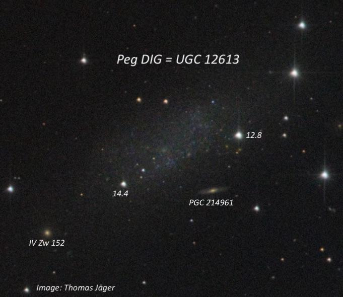
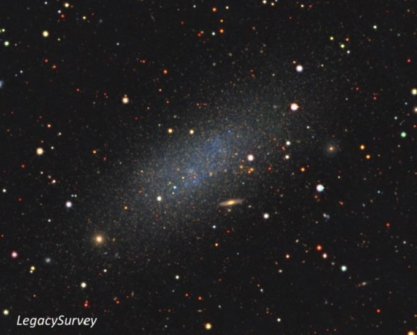
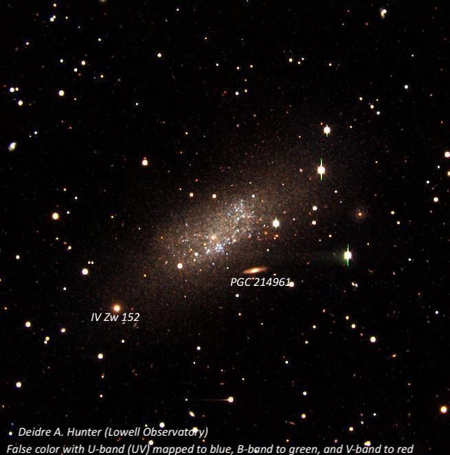
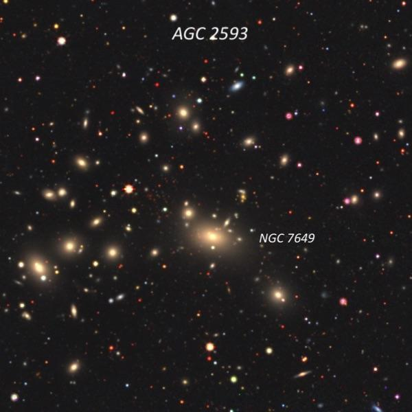
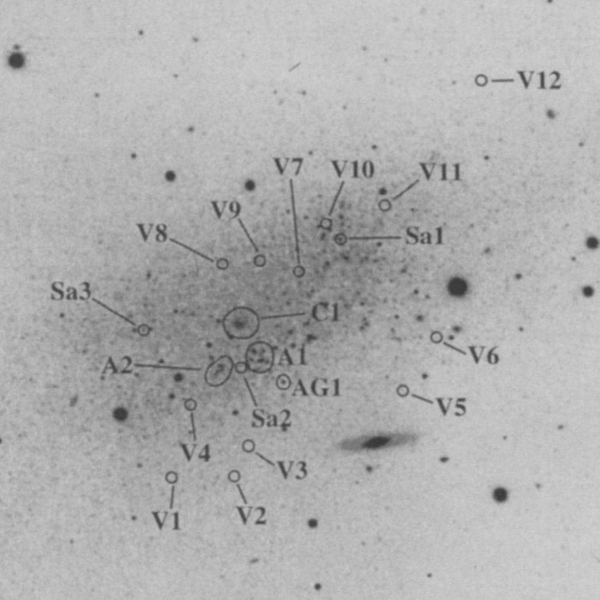

The Pegasus Dwarf Irregular
- Name: Pegasus Dwarf Irregular Galaxy (PegDIG)
- Aliases: UGC 12613 = MCG +02-59-046 = CGCG 431-072 = DDO 216 = PGC 71538
- RA: 23h 28m 34.1s
- Dec: +14° 44' 48"
- Constellation: Pegasus
- Type: dIrr/dSph
- Size: 5.0'x 2.7'
- Magnitudes: V = 12.6, B = 13.2
- Surf Br: 15.3 mag/arcmin²
The Pegasus Dwarf Irregular or PegDIG (not to be confused with the ultra-faint Pegasus dSph) was first investigated by Swedish astronomer Erik Holmberg in his 1958 work "A Photographic Photometry of Extragalactic Nebulae". But Holmberg credited the discovery to Albert G. Wilson, who supervised the National Geographic Society-Palomar Observatory Sky Survey (POSS) in the early 1950s, before working at Lowell Observatory. However, Fritz Zwicky included a full page photo of the Pegasus Dwarf, along with nearby IV Zw 152, taken with the Palomar 200-inch in his "Red Book" (page 378, "Catalogue of Selected Compact Galaxies"), and called it the "Zwicky Pegasus Dwarf", implying he made the discovery! In any case, we know it was found on Palomar Sky Survey plates.
It was not recognized as a nearby galaxy and possible member of the Local Group until Fisher & Tully (1975) detected its neutral atomic hydrogen (HI) and measured its radial velocity. Still, considering it's so nearby, the distance has been difficult to pin down. A 2005 study by McConnachie et al. found a distance of 3.0 +/- 0.1 Mly. A 2009 investigation identified 34 Cepheid candidates and derived a distance of 1.07 ± 0.05 Mpc [~3.5 Mly]. These distances place it a bit further than M31, and with a separation of 31°, it is generally considered an outlying member of the M31 subgroup of the Local Group.

The galaxy was studied by Gallager et al. in 1998 with the Wide Field Planetary Camera 2 (WFPC2) on the Hubble Space Telescope using B, V and I band filters. The dwarf was highly resolved into individual stars to limiting magnitudes of about 25.5 in B and V and 25 in I. The color-magnitude diagrams (CMD) showed a young (<0.5 billion years) main-sequence stellar component, mainly in two central clumps (OB associations), with older stars in an extended disk or halo. Models suggested that the stellar population mainly formed 2-4 billion years ago, though ages up to 8 billion years are possible.
As opposed to the more numerous dwarf spheroidal satellites of the Milky Way and M31, PegDIG retains a low amount of gas and has a modest amount of present-day star formation. So, it's been suggested the galaxy represents a nearby example of a transition object between dwarfs showing strong ongoing star formation (such as the LMC) and those with clear signatures of only former star formation. Although the galaxy is isolated, a 2007 paper found evidence for ram pressure stripping. The distribution of stars is regular, but the H I has a "cometary" appearance suggesting an intergalactic medium associated with the Local Group.
An interesting study in 2009 titled "The faint outer regions of the Pegasus dwarf irregular galaxy: a much larger and undisturbed galaxy" used multicolour photometry from the Sloan Digital Sky Survey (SDSS) and new H I observations to study the spatial extent and structure of PegDIG. In most images, the diameter of the main body extends ~6,000 light-years (using a distance of 3.5 Mly). But faint extensions were detected out to a diameter of nearly 25,000 light-years. Furthermore, the study identified a number of stellar concentrations, possibly stellar associations, arranged in a ring around the main body. The outermost parts contained stars 5-10 billion years old, while the inner few thousand light-years contained stars 1 billion years or younger. The authors also suggested that PegDIG is a fairly recent acquisition by the Local Group, since it doesn't appear to be disturbed by interactions with other galaxies.

As far as observations I first logged this galaxy with my 13.1-inch Odyssey I in the mid-1980s, but didn't note anything besides "very faint". In the 1990s I took another look with my 17.5-inch and recorded:
At 100x a very low surface brightness hazy region with no concentration was visible just following a trio of mag 12 stars. It was difficult to estimate the dimensions and orientation as the halo gradually faded into the background but the faint glow appeared roughly 4' × 2', extended WNW-ESE. Also viewed at 140x, although no other details were seen.
The next observation was made with my 24-inch in 2013 and the only difference was a slightly brighter central region:
PegDIG was picked up at 200x as a faint, large, very diffuse elongated glow with a couple of stars superimposed. It appeared ~ 4.0' × 2.0', extended WNW-ESE. The surface brightness is quite low and fairly even, except for a slightly brighter 30" patch (core?) near the center. A mag 14 star is just within the ESE end (the central patch is ~1' WNW of this star) and a brighter mag 12.7 star is embedded on the south side of WNW end.
Finally, in Jimi's 48-inch f/4 at 375× from a few years ago...
Faint, very large, low surface brightness glow, easily seen but featureless except for a relatively large slightly brighter central region [~1.5' in diameter]. The edges of the halo fade out without a definite edge but appear slightly larger than the previous size (4' × 2') noted in my 24-inch. The glow appears to extend beyond the mag 14.4 star on the ESE end.
There are two background galaxies (about 925 Mly) -- PGC 214961 and IV Zw 152 – in the same field as PegDIG. PGC 214961 is an edge-on 1.6' SSW of center. In the 48-inch, I noted it as easily visible, very elongated 4:1 ~E-W, thin streak, ~25" × 6". Brighter IV Zw 152 = PGC 71549 is situated off the ESE end, 4.4' from center. It appeared moderately bright, round, with a well-defined halo extending 20"-24" diameter, with a fairly good surface brightness.

As always,
"Give it a go and let us know!
Good luck and great viewing!"
Sources:
1) 1958 by Holmberg "A Photographic Photometry of Extragalactic Nebulae"
2) 1975 by Fisher & Tully: "Neutral Hydrogen Observations of DDO Dwarf Galaxies"
3) 1998 by Gallagher+: "A Wide Field Planetary Camera 2 Study of the Resolved Stellar Population of the Pegasus Dwarf Irregular Galaxy (DDO 216)"
4) 2005 by McConnachie+: "Distances and Metallicities for 17 Local Group Galaxies"
5) 2007 by McConnachie+: "Ram Pressure Stripping of an Isolated Local Group Dwarf Galaxy: Evidence for an Intragroup Medium"
6) 2009 by Meschin+: "Cepheid Variable Stars in the Pegasus Dwarf Irregular Galaxy: Constraints on the Star Formation History"
7) 2009 by Kniazev+: "The faint outer regions of the Pegasus dwarf irregular galaxy: a much larger and undisturbed galaxy"
General Review up to 1999:
8) Sidney van den Bergh "The Galaxies of the Local Group" (Cambridge Astrophysics Series)
Steve's follow-up — October 27th, 2024, 06:06 PM
I should probably have mentioned that 1° due west of PegDIG is the galaxy cluster Abell (AGC) 2593. Its brightest member is NGC 7649 (a cD-type, which stands for cluster dominant). Most of the other galaxies are very small and fairly dim (V = 15.0-15.6), but I logged 8 members (z ~ .042 at 560 Mly) with my old 18-inch at 323x.

Steve's follow-up — October 29th, 2024, 04:16 AM
Since "An Atlas of Local Group Galaxies" is not commonly used, here’s part of the labeled image of PegDIG with A1, A2 (two OB associations), C1 (cluster), AG1 (HII region) and a dozen variable stars.
